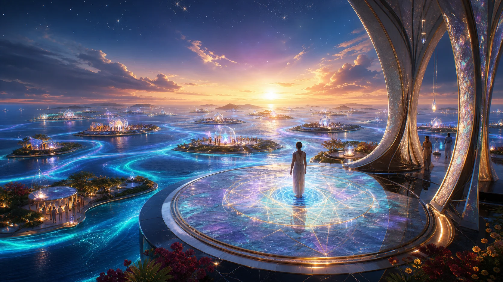
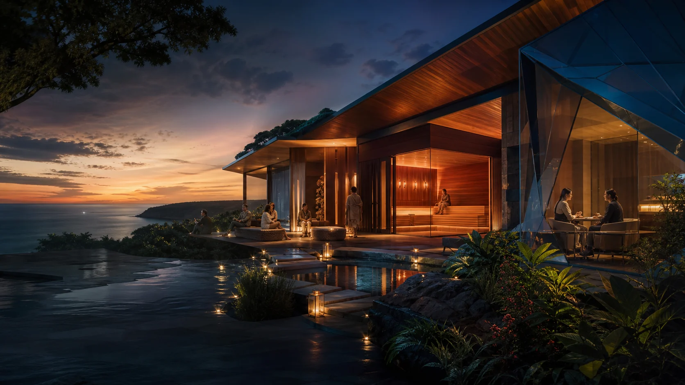

Primordial Consent 1,2,3, Infinity
The divine self digital twin is born. A sovereign inner life enters form, memory, contrast and choice.
Artistic meaning
In this regional project, self-sovereign means the person remains at the centre of their own body, story, data and digital reflection. Shared infrastructure gathers around that dignity.
Imagined concept artwork
Every person arrives with an inner world that deserves beauty, privacy and room to grow. The co-operative idea begins there, then asks what becomes possible when communities share the expensive parts without swallowing the individual.
Self-sovereign is not isolation. It is relationship by agreement. A digital twin here means a growing reflection of a person's records, memories, choices and patterns, held first on hardware that person chooses.
Each part remains close enough to feel like yours.
Each idea receives its own atmosphere, evidence and room for local variation. Ten project worlds are open, with a human Site Map as the eleventh doorway.
 Co-operative PathsMany agreements. Equal dignity.
Co-operative PathsMany agreements. Equal dignity.

Shared WellbeingWarmth, breath, rest and careful evidence.A construction and research world for the proposed Geode and Personal Atmosphere Delivery System.
Future researchA plain-language path into local hardware, private reflection and a digital twin that grows with its person.
Working proposalA Protopian Gambit carries an inner journey through birth, repair and embodied reflection. These songs are not decorative extras. They give the technology and co-operative model a human pulse.
The divine self digital twin is born. A sovereign inner life enters form, memory, contrast and choice.
Artistic meaningThe self repairs with gold. The crack becomes a map for reflection, learning and renewed relationship.
Artistic meaningThe hyperbaric oxygen therapy song carries pressure, measurement, commitment and digital-twin formation through an artistic sixty-session journey.
Art beside evidenceOne source table labels A$1,000 as an indicative per-member protocol cost at 35 members. The same table also shows an A$5,000 initial loan per member and a separate A$500 operating fee, so A$1,000 is not presented as the total price of entry.
Working proposalCurrent public records, working proposals, future research and unresolved details remain visually distinct throughout the site.